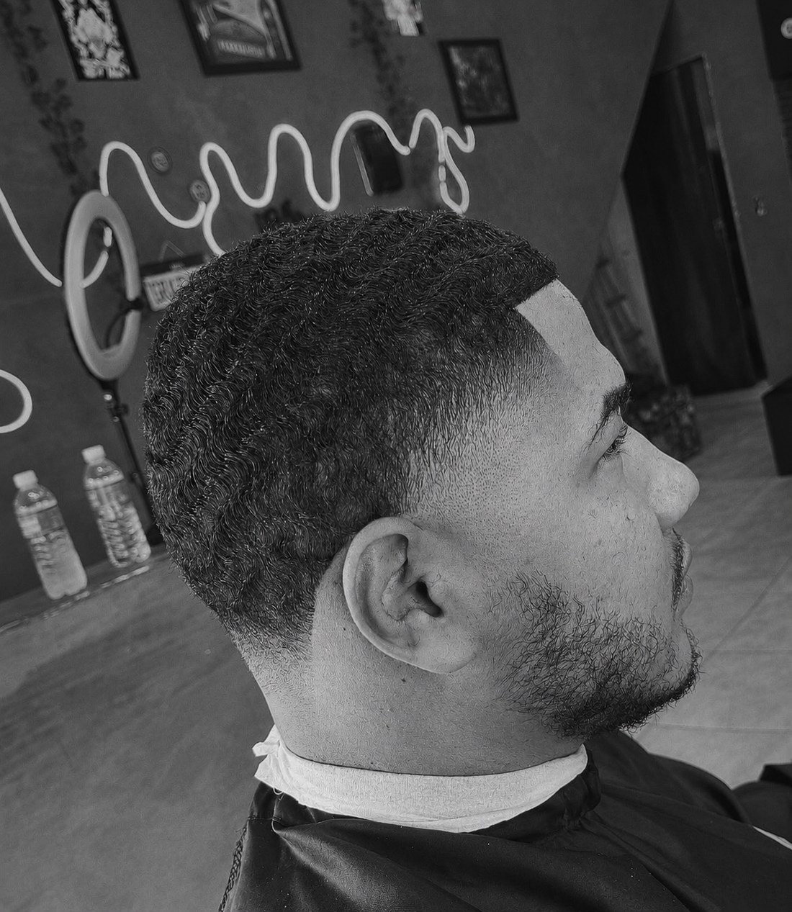
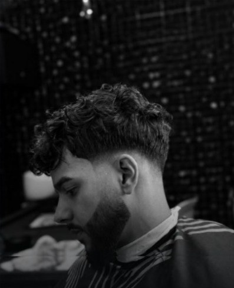

Seu
corte.
Sua
presença.
Técnica, precisão e acabamento para um visual que fala antes de você.
Do primeiro contato
ao último acabamento.
Samuel trata cada atendimento como um trabalho individual: ele entende o seu estilo antes de pegar a máquina.
Você agenda
Escolha o melhor horário pelo botão de agendamento, direto no WhatsApp.
Leitura do corte
Textura, caimento e personalidade definem o corte que combina com você.
Técnica e acabamento
Corte com precisão e detalhes finalizados para durar além da cadeira.
É identidade lapidada nos mínimos detalhes.
Cada detalhe
é uma escolha.
Cada corte,
uma assinatura.
Da leitura do cabelo ao último acabamento, técnica e intenção trabalham juntas para revelar a sua melhor versão.
Viver a experiência ↘Cortes que
falam por si

Textura & contraste
Forma & precisãosem
atalho
Precisão é
uma atitude.
Samuel Gomes trabalha cada corte como uma construção individual. A técnica acompanha a textura, o caimento e a personalidade de quem senta na cadeira.
O resultado é limpo, atual e feito para continuar funcionando depois que você sai da barbearia.
Conhecer o trabalho ↗Pronto
para
elevar o
visual?
Chame no WhatsApp para consultar horários, valores e escolher o atendimento ideal.
Agendar pelo WhatsApp- Local
- R. Kenda, 45 — Jardim RosinhaSão Paulo — SP, 05274-050Abrir no Google Maps ↗
- Horários
- Sob consultaConfirme pelo agendamento
- Contato
- Instagram @osamuellgomesAgendamento online pelo botão